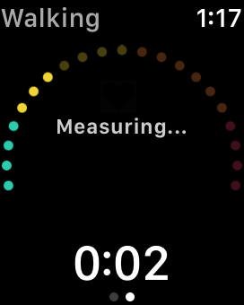

If "Measuring ..." continues for a long time, your heart rate can not be acquired.
Please make sure that the permission of reading heart rate in Apple Health app.
Check the Permissions of Apple Health
There is a setting of Workout Power Saving Mode in Apple Watch app > My Watch > General.
If the Workout Power Saving Mode is ON, heart rate will not be measured. Please turn it off.
Please note that turning off the power saving mode will increase the consumption of Apple Watch's battery. If you are concerned about battery consumption when you work out for a long time, please consider getting an external heart rate monitor.
In OFF, the Zones app will either be in the "Measuring ..." state, or it will be updated once every few minutes.
Please give up on the display of heart rate, scroll down and use the screen which displayed distance and calorie consumption.
Also note that it is difficult to calculate accurate calorie expenditure if heart rate can not be acquired.
(Calories burned are calculated by HealthKit in Apple Watch)
For the power saving mode, refer to the following Apple support page.
Work out with your Apple Watch - Save power while you work out
You can check whether there are records in Apple Health.
If your Apple Watch is temporarily unable to measure your heart rate, it may be improved by using the Apple's app.
Make sure you can measure it on your Apple Watch using the "Workout" app or the "Heart rate" app.
Zones reads your heart rate registered in Apple Watch's health (HealthKit).
Therefore, the external heart rate monitor needs to be connected to Apple Watch via Bluetooth.
Please check How to Measure Heart Rate.